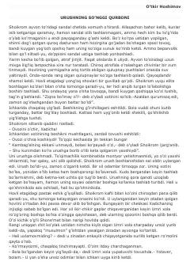

USUrush davridagi og'ir turmush tashvishlari va inson taqdirlari tasvirlangan asar.
Mazkur asarda urush davri va undan keyingi og'ir yillarda yashagan oddiy insonlarning turmush tashvishlari, oilaviy muammolari va ruhiy kechinmalari mahorat bilan tasvirlangan. Bosh qahramon Shoikrom va uning oilasi misolida urushning jamiyat va odamlar taqdiriga ko'rsatgan salbiy ta'siri ochib beriladi. Asar insoniy munosabatlar va hayotiy sinovlar haqida hikoya qiladi.